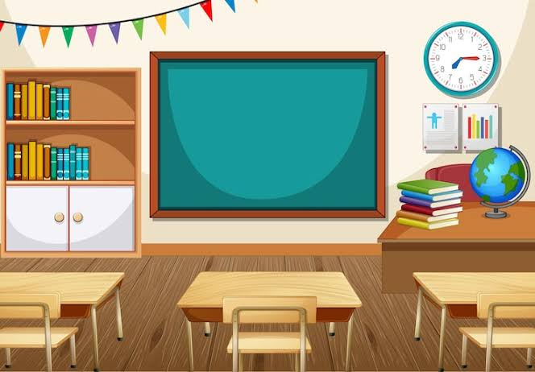

Student engagement is crucial for developing reading stamina and improving comprehension. Through classroom observations, I have seen how student choice and access to engaging texts can increase motivation.
Educational technology provides opportunities for collaboration, creativity, and differentiated instruction when used purposefully.
